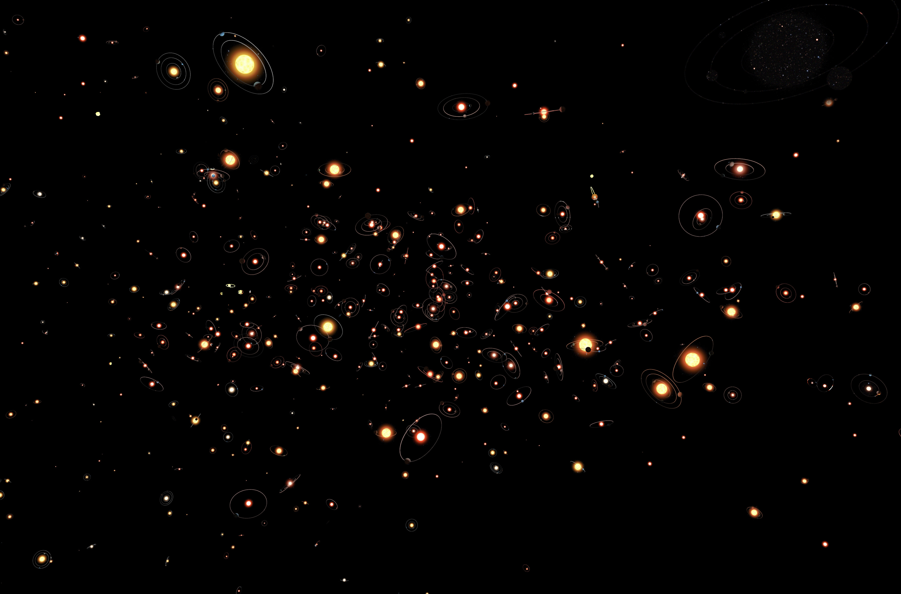
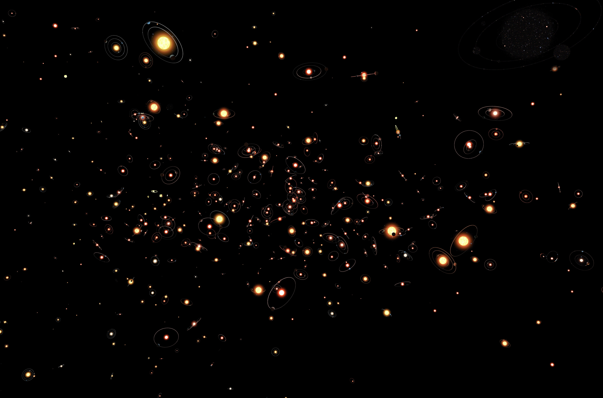

Our Project
Welcome to "ExOdyssey", an exciting project that combines the fun of an educational game with the captivating narrative of a novel. Designed to inspire and educate, "ExOdyssey" invites young explorers to embark on an intergalactic adventure about exoplanets, where they will learn about the universe and its wonders through interactive gameplay and an engaging story.
On this journey, children will not only enjoy solving challenges and discovering new galaxies, but they will also develop critical skills such as logical thinking, collaboration, and scientific curiosity. The novel complements the gaming experience, providing a rich background and endearing characters to guide players on their cosmic journey.
Through "ExOdyssey", we aim to foster a passion for science and exploration while cultivating a sense of wonder at the vast universe around us. Join us and discover the secrets of space!